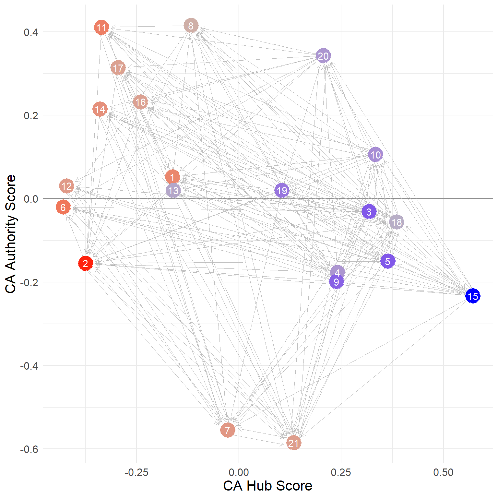

Status and Prestige
In the the centrality lecture notes, we saw how to compute the most popular centrality measures. Freeman’s “big three” have strong graph-theoretic foundation and do a good job of formalizing and quantifying the idea that a node is central if it is “well-placed” in the network, where being well-placed resolves into either being able to reach others (directly as with degree or indirectly as with closeness) or being able to intermediate between others (as with betweenness).
Networks as Prisms
There is, however, another strong and well-motivated intuition as to what it means to be “well-placed” in a network. Here the ties in the network are seen less as “pipes” that transmit stuff and more like “prisms” that reflect on you (Podolny 2001).
One way to think about this second version of well-placedness is that what is transmitted through the network is the network itself, or more accurately, the importance, status, and prestige of the people you are connected to, preferably flowing from them (high status people) to you.
Under this interpretation, actors get status and prestige in the network from being connected to prestigious and high status others. Those others, in turn, get their status from being connected to high status others, and so on ad infinitum.
One way of quantifying this idea goes like this. If \(\mathbf{x}\) is a vector containing the desired status scores, then the status of actor \(i\) should be equal to:
\[ x_i = \sum_{j} a_{ij}x_j \tag{1}\]
Where \(a_{ij} = 1\) if \(i\) is adjacent to \(j\) in the network. Note that this formula just sums up the status scores of all the others each actor is connected to.
In matrix notation, if \(\mathbf{x}\) is a column vector of status scores then:
\[ \mathbf{x} = A\mathbf{x} \]
Because \(\mathbf{x}\) is an \(n \times n\) matrix and \(\mathbf{x}\) is \(n \times 1\) column vector, the multiplication \(A\mathbf{x}\) will return another column vector of dimensions \(n \times 1\), in this case \(\mathbf{x}\) itself!
Note the problem that this formulation poses: \(\mathbf{x}\) appears on both sides of the equation, which means that in order to know the status of any one node we would need to know the status of the others, but calculating the status of the others depends on knowing the status of the focal node, and so on. There’s a chicken and the egg problem here.
Now, there is an obvious (to the math majors) mathematical solution to this problem, because there’s a class of solvable (under some mild conditions imposed on the matrix \(\mathbf{A}\)) linear algebra problems that take the form:
\[ \lambda\mathbf{x} = A\mathbf{x} \]
Where \(\lambda\) is just a plain old number (a scalar). Once again conditional of the aforementioned mild conditions being met, we can iteratively search for a value \(\lambda\), fix it, then fill up the \(\mathbf{x}\) vector with another set of values, fix those, search for a new \(\lambda\), and continue until we have values of \(\lambda\) and \(\mathbf{x}\) that make the above equality true.
When we do that successfully, we say that the value of \(\lambda\) we hit upon is an eigenvalue of the matrix \(\mathbf{A}\) and the values of the vector \(\mathbf{x}\) we came up with are an eigenvector of the same matrix (technically in the above equation a right eigenvector).
Eigenvalues and eigenvectors, like Don Quixote and Sancho Panza, come in pairs, because you need a unique combination of both to solve the equation. Typically, a given matrix (like an adjacency matrix) will have multiple \(\lambda/\mathbf{x}\) pairs that will solve the equation. Together the whole set \(\lambda/\mathbf{x}\) pairs that make the equation true are the eigenvalues and eigenvectors of the matrix.
Eigenvalues, Eigenvectors, Oh My!
Note that all of this obscure talk about eigenvalues and eigenvectors is just matrix linear algebra stuff. It has nothing to do with networks and social structure.
In contrast, because the big three centrality measures have a direct foundation in graph theory, and graph theory is an isomorphic model of social structures (points map to actors/people and lines map to relations) the “math” we do with graph theory is directly meaningful as a model of networks (the counts of the number of edges incident to a node is the count of other actors they someone is directly connected to).
Eigenvalues and eigenvectors are not a model of social structure in the way graph theory is (their first scientific application was in Chemistry and Physics). They are just a mechanical math fix to a circular equation problem.
This is why it’s a mistake to introduce network measures of status and prestige by jumping directly to the machinery of linear algebra (or worse talk about the idea of eigenvector centrality which means nothing to most people, and combines two obscure terms into one even more obscure compound term).
A better approach is to see if we can motivate the use of measures like the ones above using the simple model of the distribution of status and prestige we started with earlier. We will see that we can, and that doing that leads us back to solutions that are the mathematical equivalent of all the eigenvector stuff.
Distributing Status to Others
Let’s start with the simplest model of how people can get their status from the status of others in a network. It is the simplest because it is based on degree.
Imagine everyone has the same “quantum” of status to begin with (this can be stored in a vector containing the same number of length equals to number of actors in the network). Then, at each step, people “send” the same amount of status to all their alters in the network. At the end of each step, we compute people’s status scores using Equation 1. We stop doing this after the status scores of people stop changing across each iteration.
Let us see a real-life example at work.
We will use a data set collected by David Krackhardt on the friendships of 21 managers in a high tech company in the West coast (see the description here). The data are reported as directed ties (\(i\) nominates \(j\) as a friend) but we will constrain ties to be undirected:
The undirected friendship network is shown in Figure 1 (a).


We then extract the adjacency matrix corresponding to this network:
And here’s a simple custom function using a while loop that exemplifies the process of status distribution through the network we talked about earlier:
status1 <- function(w) {
x <- rep(1, nrow(w)) #initial status vector set to all ones of length equal to the number of nodes
d <- 1 #initial delta
k <- 0 #initializing counter
while (d > 1e-10) {
o.x <- x #old status scores
x <- w %*% o.x #new scores a function of old scores and adjacency matrix
x <- x/norm(x, type = "E") #normalizing new status scoress
d <- abs(sum(abs(x) - abs(o.x))) #delta between new and old scores
k <- k + 1 #incrementing while counter
}
return(as.vector(x))
}Lines 2-4 initialize various quantities, most importantly the initial status vector for each node to just a series of ones:
Then lines 5-12 implement a little loop of how status is distributed through the network, with the most important piece of code being line 7 where the current status scores for each node are just the sum of the status scores of its neighbors computed one iteration earlier. The program stops when the difference between the old and the new scores is negligible (\(\delta < 10^{-10}\)) as checked in line 9.
Note the normalization step on line 8, where we divide the each status score by a normalized sum of all of the scores. This is required in order to prevent the sum of status scores from getting bigger and bigger indefinitely (in mathese, this is referred to as the sum “diverging”). In base R, the type = "E" normalization implements the Euclidean vector norm (also sometimes confusingly called the Frobenieus norm), by which we divide each value of the status scores by after each update.1
And here’s the resulting (row) vector of status scores for each node:
[1] 0.619 0.635 0.446 0.489 0.629 0.430 0.205 0.380 0.444 0.468 0.814 0.549
[13] 0.162 0.401 0.613 0.360 1.000 0.247 0.680 0.360 0.392What if I told you that this vector is the same as that given by the leading (first) eigenvector of the adjacency matrix?
s.eig <- eigen(A)$vector[, 1] * -1#computing the first eigenvector
s.eig <- s.eig/max(s.eig) #normalizing by maximum
round(s.eig, 3) [1] 0.619 0.635 0.446 0.489 0.629 0.430 0.205 0.380 0.444 0.468 0.814 0.549
[13] 0.162 0.401 0.613 0.360 1.000 0.247 0.680 0.360 0.392Which is of course what is computed by the eigen_centrality function in igraph:
[1] 0.619 0.635 0.446 0.489 0.629 0.430 0.205 0.380 0.444 0.468 0.814 0.549
[13] 0.162 0.401 0.613 0.360 1.000 0.247 0.680 0.360 0.392So, the “eigenvector centralities” are just the limit scores produced by the status distribution process implemented in the status1 function!
When treated as a structural index of connectivity in a graph (i.e., a centrality measure) the eigenvector status scores induce an ordering of the nodes which we may be interested in looking at:
nodes <- 1:vcount(g)
eig.dat <- data.frame(Nodes = nodes, Eigen.Cent = s, Deg.Cent = degree(g))
eig.dat <- eig.dat[order(eig.dat$Eigen.Cent, decreasing = TRUE), ]
library(kableExtra)
kbl(eig.dat[1:10, ],
format = "html", align = "c", row.names = FALSE,
caption = "Top Ten Eigenvector Scores.",
digits = 3) %>%
kable_styling(bootstrap_options =
c("hover", "condensed", "responsive"))| Nodes | Eigen.Cent | Deg.Cent |
|---|---|---|
| 17 | 1.000 | 18 |
| 11 | 0.814 | 14 |
| 19 | 0.680 | 10 |
| 2 | 0.635 | 10 |
| 5 | 0.629 | 10 |
| 1 | 0.619 | 9 |
| 15 | 0.613 | 9 |
| 12 | 0.549 | 8 |
| 4 | 0.489 | 7 |
| 10 | 0.468 | 8 |
Most other measures of status in networks are constructed using similar principles. What changes is the model of how status is distributed in the system. That’s why scary and non-intuitive stuff about eigenvectors or whatever is misleading.
Other measures are designed such that they either change the quantum of status that is distributed through the network by making it dependent on some node characteristic (like degree) or differentiate between different routes of distribution in directed graphs, by for instance, differentiating status derived from outgoing links from that derived from incoming links.
Let’s see some examples of these alternative cases.
Bonacich Prestige
In a classic paper, Philip Bonacich (1972) noted the above connection between different ways people conceptualized status and prestige in networks and the leading eigenvector of the adjacency matrix. He then noted that we can extend similar ideas to the directed case.
Here, people get status from receiving nominations from high status others (i.e., those who receive a lot of nominations), whose partners also get status from receiving a lot of nominations from high status others, and so forth.
This means that in a directed system of relations, status distribution operates primarily via the indegree of each node, so that if \(\mathbf{A}\) is the asymmetric adjacency matrix corresponding to the directed graph, then if we play our status game on the transpose of this matrix \(\mathbf{A}^T\) we will get the scores we seek (Fouss, Saerens, and Shimbo 2016, 204).
Recall that in transposing the matrix of a directed graph, we change it from being a from/to matrix (nodes in the rows send ties to nodes in the columns) to a to/from matrix: Nodes in the rows receive ties from nodes in the columns. So we want to play our status game in this matrix, because we want to rank nodes according to their receipt of ties from high-status others.
Let’s see a real-life example, this time using the directed version of the Krackhardt friendship nomination network among the high-tech managers:
[1] 0.922 1.000 0.379 0.639 0.396 0.190 0.240 0.531 0.411 0.117 0.413 0.769
[13] 0.082 0.428 0.368 0.450 0.592 0.440 0.425 0.225 0.583Which are the same scores we would have gotten using the eigen_centrality function in igraph with the argument directed set to TRUE:
[1] 0.922 1.000 0.379 0.639 0.396 0.190 0.240 0.531 0.411 0.117 0.413 0.769
[13] 0.082 0.428 0.368 0.450 0.592 0.440 0.425 0.225 0.583And, like before, we can treat these scores as centrality measures and rank the nodes in the graph according to them.
Here are the top ten nodes:
| Nodes | Eigen.Cent | In.Deg.Cent |
|---|---|---|
| 2 | 1.000 | 10 |
| 1 | 0.922 | 8 |
| 12 | 0.769 | 8 |
| 4 | 0.639 | 5 |
| 17 | 0.592 | 6 |
| 21 | 0.583 | 5 |
| 8 | 0.531 | 5 |
| 16 | 0.450 | 4 |
| 18 | 0.440 | 4 |
| 14 | 0.428 | 5 |
While the top indegree centrality node (2) also gets the top Eigenvector Centrality scores, we see many cases of nodes with equal indegree centrality that get substantively different Eigenvector scores. So who you are connected matters in addition to how many incoming connections you have.
A Degree-Normalized Model of Status (AKA PageRank)
Note that the model of status distribution implied by the Eigenvector Centrality approach just reviewed implies that each actor distributes the same amount of status independently of the number of connections they have. Status just replicates indefinitely. Thus, a node with a 100 friends has 100 status units to distribute to each of them and a node with a 10 friends has 10 units.
This is why the eigenvector idea rewards nodes who are connected to popular others more. Even though everyone begins with a single unit of status, well-connected nodes by degree end up having more of it to distribute.
But what if status propagated in the network proportionately to the number of connections one had? For instance, if someone has 100 friends and they only had so much time or energy, they would only have a fraction of status to distribute to others than a person with 10 friends.
In that case, the node with a hundred friends would only have 1/100 of status units to distribute to each of their connections while the node with 10 friends would have 1/10 units. Under this formulation, being connected to discerning others, that is people who only connect to a few, is better than being connected to others who connect to everyone else indiscriminately.
How would we implement this model? First, let’s create a variation of the undirected friendship nomination adjacency matrix called the \(\mathbf{P}\) matrix. It is defined like this:
\[ \mathbf{P} = \mathbf{D}_{out}^{-1}\mathbf{A} \]
Where \(\mathbf{A}\) is our old friend the adjacency matrix, and \(\mathbf{D}_{out}^{-1}\) is a matrix containing the inverse of each node outdegree along the diagonals and zeroes in every other cell. In R we can create the \(\mathbf{D}_{out}^{-1}\) matrix using the native diag function like this:
Recalling that the function rowSums gives us the row sums of the adjacency matrix, which is the same as each node’s outdegree.
We can check out that the \(\mathbf{D}_{out}^{-1}\) indeed contains the quantities we seek by looking at its first few rows and columns:
[,1] [,2] [,3] [,4] [,5] [,6] [,7] [,8] [,9] [,10]
[1,] 0.11 0.0 0.00 0.00 0.0 0.00 0.00 0.0 0.00 0.00
[2,] 0.00 0.1 0.00 0.00 0.0 0.00 0.00 0.0 0.00 0.00
[3,] 0.00 0.0 0.17 0.00 0.0 0.00 0.00 0.0 0.00 0.00
[4,] 0.00 0.0 0.00 0.14 0.0 0.00 0.00 0.0 0.00 0.00
[5,] 0.00 0.0 0.00 0.00 0.1 0.00 0.00 0.0 0.00 0.00
[6,] 0.00 0.0 0.00 0.00 0.0 0.14 0.00 0.0 0.00 0.00
[7,] 0.00 0.0 0.00 0.00 0.0 0.00 0.33 0.0 0.00 0.00
[8,] 0.00 0.0 0.00 0.00 0.0 0.00 0.00 0.2 0.00 0.00
[9,] 0.00 0.0 0.00 0.00 0.0 0.00 0.00 0.0 0.17 0.00
[10,] 0.00 0.0 0.00 0.00 0.0 0.00 0.00 0.0 0.00 0.12We can then create the \(\mathbf{P}\) matrix corresponding to the undirected version of the Krackhardt friendship network using matrix multiplication like this:
Recalling that %*% is the R matrix multiplication operator.
So the resulting \(\mathbf{P}\) is the original adjacency matrix, in which each non-zero entry is equal to one divided by the outdegree of the corresponding node in each row.
Here are the first 10 rows and columns of the new matrix:
[,1] [,2] [,3] [,4] [,5] [,6] [,7] [,8] [,9] [,10]
[1,] 0.00 0.11 0.00 0.11 0.00 0.00 0.00 0.11 0.00 0.00
[2,] 0.10 0.00 0.00 0.10 0.10 0.10 0.00 0.00 0.00 0.00
[3,] 0.00 0.00 0.00 0.00 0.00 0.00 0.00 0.00 0.00 0.17
[4,] 0.14 0.14 0.00 0.00 0.00 0.00 0.00 0.14 0.00 0.00
[5,] 0.00 0.10 0.00 0.00 0.00 0.00 0.00 0.00 0.10 0.10
[6,] 0.00 0.14 0.00 0.00 0.00 0.00 0.14 0.00 0.14 0.00
[7,] 0.00 0.00 0.00 0.00 0.00 0.33 0.00 0.00 0.00 0.00
[8,] 0.20 0.00 0.00 0.20 0.00 0.00 0.00 0.00 0.00 0.20
[9,] 0.00 0.00 0.00 0.00 0.17 0.17 0.00 0.00 0.00 0.17
[10,] 0.00 0.00 0.12 0.00 0.12 0.00 0.00 0.12 0.12 0.00Note that the entries are now numbers between zero and one and the matrix is asymmetric; that is, \(p_{ij}\) is not necessarily equal to \(p_{ji}\). In fact \(p_{ij}\) will only be equal to \(p_{ji}\) when \(k_i = k_j\) (nodes have the same degree). Each cell in the matrix is thus equal to \(1/k_i\) where \(k_i\) is the degree of the node in row \(i\).
Moreover the rows of \(\mathbf{P}\) sum to one:
Which means that the \(\mathbf{P}\) matrix is row stochastic. That is the “outdegree” of each node in the matrix is forced to sum to a fixed number. Substantively this means that we are equalizing the total amount of prestige or status that each node can distribute in the system to a fixed quantity.
This means that nodes with a lot of out-neighbors will dissipate this quantity by distributing it across a larger number of recipients (hence their corresponding non-zero entries in the rows of \(\mathbf{P}\)) will be a small number) and nodes with a few out-neighbors will have more to distribute.
Another thing to note is that while the sums of the \(\mathbf{P}\) matrix sum to a fixed number (1.0) the sums of the columns of the same matrix do not:
[1] 1.11 1.34 0.63 0.86 1.56 1.06 0.37 0.51 0.61 1.21 2.33 0.92 0.17 0.87 1.08
[16] 0.53 2.73 0.54 1.21 0.60 0.77This means that inequalities in the system will be tied to the indegree of each node in the \(\mathbf{P}\) matrix, which is given by either the column sums of the matrix (as we just saw) or the row sums of the transpose of the same matrix \(\mathbf{P}^T\):
[1] 1.11 1.34 0.63 0.86 1.56 1.06 0.37 0.51 0.61 1.21 2.33 0.92 0.17 0.87 1.08
[16] 0.53 2.73 0.54 1.21 0.60 0.77This will come in handy in a second.
The \(\mathbf{P}\) matrix has many interpretations, but here it just quantifies the idea that the amount of centrality each node can distribute is proportional to their degree, and that the larger the degree, the less there is to distribute (the smaller each cell \(p_{ij}\) will be). Meanwhile, it is clear that nodes that are pointed to by many other nodes who themselves don’t point to many others have a larger indegree in \(\mathbf{P}\).
Now we can just adapt the the model of status distribution we used for eigenvector centrality but this time using the \(\mathbf{P}\) rather than the \(\mathbf{A}\) matrix. Note that because we are interested in the status that comes into each node we use the transpose of \(\mathbf{P}\) rather than \(\mathbf{P}\), just like we did for the Bonacich (1972) status score.
So at each step the status of a node is equivalent to the sum of the status scores of their in-neighbors, with more discerning in-neighbors passing along more status than less discerning ones:
[1] 0.500 0.556 0.333 0.389 0.556 0.389 0.167 0.278 0.333 0.444 0.778 0.444
[13] 0.111 0.333 0.500 0.278 1.000 0.222 0.556 0.278 0.333What if I told you that these numbers are the same as the leading eigenvector of \(\mathbf{P}^T\)?
[1] 0.500 0.556 0.333 0.389 0.556 0.389 0.167 0.278 0.333 0.444 0.778 0.444
[13] 0.111 0.333 0.500 0.278 1.000 0.222 0.556 0.278 0.333And, of course, the (normalized) scores produced by this approach are identical to those computed by the page_rank function in igraph with “damping factor” (to be explained in a second ) set to 1.0:
[1] 0.500 0.556 0.333 0.389 0.556 0.389 0.167 0.278 0.333 0.444 0.778 0.444
[13] 0.111 0.333 0.500 0.278 1.000 0.222 0.556 0.278 0.333So the distributional model of status is the same one implemented in the PageRank algorithm!
PageRank as a Markov Difussion Model
Remember how we said earlier that there are multiple ways of thinking about \(\mathbf{P}\)? Another way of thinking about the \(\mathbf{P}\) matrix is as characterizing the behavior of a random walker in the graph. At any time point \(t\) the walker (a piece of information, a virus, or status itself) sits on node \(i\) and the with probability \(p_{ij}\) jumps to \(j\), who is one of node \(i\)’s out-neighbors. The probabilities for each \(i\) and \(j\) combination are stored in the matrix \(\mathbf{P}\).
So our status game can best be understood as a special case of a diffusion game, where what’s being diffused through the network is status itself. Let’s see how this would work.
Imagine we want to spread something through the Krackhardt managers friendship network like a rumor or a piece of information. We start with a seed node \(i\) and then track “where” the rumor is at each time step in the network (where the location is a person in the network). The rules of the game are the Markov diffusion model we described above. At each time step the rumor sits on some \(j\) and it diffuses to one of \(j\)’s neighbors \(k\) with probability \(p_{jk}\). Where the rumor has been before that time step does not affect where it goes in the present.
This sequence of transmission events is called a markov chain, and when it happens in a graph it is called a random walk on the graph. The node at which the rumor sits at a given time \(t\) is called the state of the markov chain at \(t\). For instance, the following function prints out every state of the markov chain for some series of steps \(q\), given a network transition matrix \(\mathbf{P}\) (the w argument in the function):
The function above sets the “seed” node to that given in the argument seed (by default, node 1) in line 2. It sets the nodes at risk of being in the chain to the number of nodes in the network (in this case the number of columns of the \(\mathbf{P}\) matrix) in line 3. Then, in line 4, it enters the for loop to run q times (in this case 100 times). In line 6 the state vector at t is set to a random node \(j\) sampled from the \(\mathbf{P}\) matrix with probability equal to the entry \(p_{ij}\) in the \(i^{th}\) row of the matrix.
For instance when it comes to first node that row looks like:
[1] 0.00 0.11 0.00 0.11 0.00 0.00 0.00 0.11 0.00 0.00 0.11 0.11 0.00 0.00 0.11
[16] 0.11 0.11 0.00 0.11 0.00 0.00Which means that nodes {2, 4, 8, 11, 12, 15, 16, 17, 19} (the neighbors of node 1) have an 11% chance each of being sampled in line 6 and the other ones have no chance. Then in line 7 the new source node is set to whatever neighbor of \(i\) was sampled in line 6.
Here’s a markov chain state sequence of length 100 from the managers friendship network, starting with node 1 as the seed:
[1] 12 4 2 4 2 17 11 15 19 5 2 16 17 4 2 16 4 16 1 12 10 16 10 12 17
[26] 19 17 11 13 11 15 19 20 10 16 4 11 20 10 16 2 1 2 5 10 17 7 6 9 5
[51] 21 18 11 5 9 15 5 2 18 21 2 16 4 17 11 4 12 10 5 11 12 4 11 3 17
[76] 5 11 4 1 15 1 16 1 4 8 17 8 11 15 3 11 2 11 2 4 11 1 11 5 17We can of course create a longer one by changing the q argument while setting the seed node to 5:
[1] 13 11 8 17 2 1 4 17 12 4 1 2 16 1 8 17 9 10 8 1 16 10 8 10 17
[26] 3 19 14 19 20 17 14 7 6 21 17 12 6 15 19 15 3 19 3 14 7 17 8 4 12
[51] 1 19 5 17 20 11 19 5 21 17 7 17 5 13 5 10 5 9 10 8 10 20 18 21 18
[76] 21 12 17 4 1 12 1 4 11 13 11 3 11 17 12 6 12 17 6 12 11 20 17 6 21
[101] 6 17 8 1 4 12 4 1 12 4 12 19 12 21 5 14 15 11 9 5 13 11 20 18 21
[126] 6 7 6 7 6 15 14 15 19 5 15 19 17 20 17 14 19 1 16 17 4 8 4 8 10
[151] 17 12 19 12 17 15 19 14 7 17 15 11 19 3 14 15 14 7 17 19 11 4 2 18 2
[176] 17 5 19 12 1 8 10 9 6 17 20 11 17 8 4 11 2 5 2 4 17 7 17 1 19
[201] 3 14 15 1 16 10 16 1 17 8 17 8 11 17 11 13 11 20 18 11 9 17 14 15 3
[226] 19 15 17 21 17 16 17 12 6 12 19 5 21 17 8 17 10 5 17 19 14 7 17 15 9
[251] 6 7 6 7 17 15 1 2 19 20 18 11 8 1 16 1 12 10 5 9 5 21 2 17 3
[276] 15 14 7 6 21 5 17 5 15 5 17 9 15 1 8 17 20 18 11 18 2 5 11 13 5
[301] 2 5 19 3 10 16 17 15 9 10 16 4 8 10 8 4 17 19 20 10 17 1 17 16 10
[326] 9 11 19 14 17 6 15 1 11 2 1 16 1 11 9 15 6 21 6 9 5 2 19 5 2
[351] 16 1 19 2 19 1 16 10 16 2 4 11 15 17 21 2 1 15 6 9 10 20 10 12 19
[376] 20 11 19 17 12 6 12 10 20 11 5 11 4 8 10 9 5 21 6 21 12 6 2 1 15
[401] 1 4 2 17 3 17 4 1 17 3 11 4 11 2 11 20 11 2 5 10 8 11 13 11 18
[426] 21 12 11 13 5 15 11 8 1 4 8 4 12 10 17 19 5 9 17 2 19 17 12 10 9
[451] 17 20 19 11 13 5 17 2 16 10 20 17 8 11 13 11 18 2 4 17 5 13 11 12 17
[476] 19 3 10 8 1 11 12 10 16 2 11 1 12 6 9 17 11 18 2 18 2 6 21 2 19Note that one thing that happens here is that the rumor goes through some nodes more often than others. Another thing that you may be thinking is that the odds that a node will keep repeating itself in this chain has to do with how many neighbors they have since that increases the chances that they will be chosen in the sample line of the function. If you think that, you will be right!
One thing we can do with the long vector of numbers above is compute the probability that the chain will be in some state or another after a number of steps \(q\). To do that, all we have to do is find out the number of times each of the numbers (from one through twenty one) repeats itself, and then divide by the total number of steps.
In R we can do that like this, using q = 50000:
states <- markov.chain1(P, q = 50000, seed = 1)
count <- table(states)
p <- count/length(states)
names(p) <- names(count)
round(p, 2) 1 2 3 4 5 6 7 8 9 10 11 12 13 14 15 16
0.06 0.06 0.04 0.04 0.06 0.05 0.02 0.03 0.04 0.05 0.09 0.05 0.01 0.04 0.06 0.03
17 18 19 20 21
0.11 0.03 0.06 0.03 0.04 Line 1 computes the states of the markov chain after 50000 iterations using our markov.chain1 function. Then line 2 uses the native R function table as a handy trick to compute how many times each node shows up in the chain stored in the count object:
countstates
1 2 3 4 5 6 7 8 9 10 11 12 13 14 15 16
2808 3190 1947 2173 3156 2255 919 1531 1935 2512 4476 2622 651 1865 2873 1516
17 18 19 20 21
5572 1301 3212 1586 1900 Finally, line 4 divides these numbers by the length of the chain to get the probability.
Note that the numbers stored in the p vector are readily interpretable. For instance, the 0.06 in the first spot tells us that if we were to run this chain many times and check where the rumor is at step fifty-thousand, there is 6% chance that the rumor will be sitting on node 1, while there is a 11% chance that it would be sitting on node 17, a 3% chance that it will be on node 18, and so forth.
Like well behaved probabilities, these numbers sum to 1.0:
We can incorporate these steps in to a new and improved function like thus:
Which now does everything in one step:
1 2 3 4 5 6 7 8 9 10
0.05616 0.06380 0.03894 0.04346 0.06312 0.04510 0.01838 0.03062 0.03870 0.05024
11 12 13 14 15 16 17 18 19 20
0.08952 0.05244 0.01302 0.03730 0.05746 0.03032 0.11144 0.02602 0.06424 0.03172
21
0.03800 There is another way to compute these probabilities more directly from the \(\mathbf{P}\) matrix. The basic idea is that at any time \(t\), the distribution of probabilities across nodes in the network stored in the vector \(\mathbf{x}\) is given by:
\[ \mathbf{x}(t) = \mathbf{P}^T\mathbf{x}(t-1) \]
With the initial probability vector given by:
\[ \mathbf{x}(0) = \mathbf{e}^{(i)} \]
Where \(e^{(i)}\) is a vector containing all zeros except for the \(i^{th}\) spot, where it contains a one, indicating the initial seed node.
Here’s an R function that implements this idea:
And we can see what it spits out:
1 2 3 4 5 6 7 8 9 10 11 12 13 14 15 16
0.06 0.06 0.04 0.04 0.06 0.04 0.02 0.03 0.04 0.05 0.09 0.05 0.01 0.04 0.06 0.03
17 18 19 20 21
0.11 0.03 0.06 0.03 0.04 Which are the same as our more complicated function above.
Now you may have noticed this already, but these are the same numbers produced by the the PageRank status game!
1 2 3 4 5 6 7 8 9 10 11 12 13 14 15 16
0.06 0.06 0.04 0.04 0.06 0.04 0.02 0.03 0.04 0.05 0.09 0.05 0.01 0.04 0.06 0.03
17 18 19 20 21
0.11 0.03 0.06 0.03 0.04 This gives us another (and perhaps) more intuitive interpretation of what the PageRank prestige ranking is all about. Nodes have more prestige if they are more “central” in a network where something is spreading via a random walk process. Higher ranked nodes will be visited more often by the random walker, less-highly-ranked nodes less.
Note that if a random walker is just a web surfer then it makes sense that a more highly visited page should be more prestigious than a less frequently visited page (Brin and Page 1998).
PageRank with Damping and Teleportation in Directed Graphs
PageRank of course was designed to deal with directed graphs (like the World Wide Web). So let’s load up the version of the Krackhardt’s Managers data that contains the advice network which is an unambiguously directed relation. A
A plot of the advice network is shown in Figure 1 (b).
We then compute the \(\mathbf{P}\) matrix corresponding to this network:
One issue that arises in computing the \(\mathbf{P}\) for directed graphs is that there could be nodes with no out-neighbors (so-called sink nodes) or like node 6 in Figure 1 (b), who has just one out-neighbor (e.g., seeks advice from just one person), in which case the probability is 1.0 that if the random walker is at node 6 it will go to node 21.
To avoid this issue the original designers of the PageRank algorithm (Brin and Page 1998) added a “fudge” factor: That is, with probability \(\alpha\) the random walker should hop from node to node following the directed links in the graph. But once in a while with probability \(1-\alpha\) the walker should decide to “teleport” (with uniform probability) to any node in the graph whether it is an out-neighbor of the current node or not.
How do we do that? Well we need to “fix” the \(\mathbf{P}\) matrix to allow for such behavior. So instead of \(\mathbf{P}\) we estimate our distributive status model on the matrix \(\mathbf{G}\) (yes, for Google):
\[ \mathbf{G} = \alpha \mathbf{P} + (1 - \alpha) \mathbf{E} \]
Where \(\mathbf{E}\) is a matrix of the same dimensions as \(\mathbf{P}\) but containing \(1/n\) in every cell indicating that every node has an equal chance of being “teleported” to.
So, fixing \(\alpha = 0.85\) (the standard value chosen by Brin and Page (1998) in their original paper) our \(\mathbf{G}\) matrix would be:
And then we just play our status distribution game on the transpose of \(\mathbf{G}\):
[1] 0.302 0.573 0.165 0.282 0.100 0.437 0.635 0.255 0.092 0.180 0.237 0.242
[13] 0.087 0.268 0.097 0.168 0.258 0.440 0.087 0.200 1.000Which is the same answer you would get from the igraph function page_rank by setting the “damping” parameter to 0.85:
[1] 0.302 0.573 0.165 0.281 0.100 0.437 0.635 0.256 0.091 0.180 0.237 0.242
[13] 0.086 0.269 0.097 0.169 0.258 0.440 0.086 0.200 1.000We can see therefore that the damping parameter simply controls the extent to which the PageRank ranking is driven by the directed connectivity of the \(\mathbf{P}\) matrix, versus a stochastic or random component.
Combining PageRank and HITS: SALSA
Lempel and Moran (2001) show that we can combine the logic of PageRank and HITS. Their basic idea is to use the same mutually reinforcing approach as in HITS but with degree-normalized (stochastic) versions of the adjacency matrix (like in PageRank).3
Let’s see how it works.
Recall that PageRank works on the \(\mathbf{P}\) matrix, which is defined like this:
\[ \mathbf{P}_{a} = \mathbf{D}_{out}^{-1}\mathbf{A} \]
In R we compute it like this:
This matrix is row-stochastic, because each row is divided by the row total (the outdegrees of each node), meaning its rows sum to one, like we saw before:
It is also possible to compute the indegree normalized version of the \(\mathbf{P}\) matrix, defined like this:
\[ \mathbf{P}_{h} = \mathbf{D}_{in}^{-1} \mathbf{A}^T \]
Where \(\mathbf{D}_{in}^{-1}\) is a matrix containing the inverse of the indegrees along the diagonals (and zeroes elsewhere) and \(\mathbf{A}^T\) is the transpose of the adjacency matrix. Each non-zero entry of is thus equal to one divided by that row node’s indegree.
In R we compute it like this:
Like the \(\mathbf{P}_{a}\) matrix, the \(\mathbf{P}_{a}\) matrix is row-stochastic, meaning its rows sum to 1.0:
To get the SALSA version of the hub and authority scores, we can just play our status game over newly defined versions of the hub and authority matrices (Langville and Meyer 2005, 156).
The SALSA hub matrix is defined like this:
\[ \mathbf{Q}_h = \mathbf{P}_a\mathbf{P}_h \]
And the SALSA authority matrix like this:
\[ \mathbf{Q}_a = \mathbf{P}_h\mathbf{P}_a \]
Which in R looks like:
Each of these matrices are row stochastic:
[1] 1 1 1 1 1 1 1 1 1 1 1 1 1 1 1 1 1 1 1 1 1 [1] 1 1 1 1 1 1 1 1 1 1 1 1 1 1 1 1 1 1 1 1 1Which means that inequalities will be defined according to differences in the in-degrees of each node just like PageRank.
And now to obtain our SALSA hub and authority scores, we simply play our status1 game on (the transpose of) these matrices, just like we did for PageRank:
[1] 0.03 0.02 0.08 0.06 0.08 0.01 0.04 0.04 0.07 0.07 0.02 0.01 0.03 0.02 0.11
[16] 0.02 0.03 0.09 0.06 0.06 0.06 [1] 0.07 0.09 0.03 0.04 0.03 0.05 0.07 0.05 0.02 0.05 0.06 0.04 0.02 0.05 0.02
[16] 0.04 0.05 0.08 0.02 0.04 0.08What are these numbers? Well, it turns out that they are equivalent to the out and indegrees of each node, divided by the total number of edges in the network (Fouss, Renders, and Saerens 2004, 451).
So the SALSA hub and authority scores can also be obtained like this, without having to play our status game over any matrix:
[1] 0.03 0.02 0.08 0.06 0.08 0.01 0.04 0.04 0.07 0.07 0.02 0.01 0.03 0.02 0.11
[16] 0.02 0.03 0.09 0.06 0.06 0.06 [1] 0.07 0.09 0.03 0.04 0.03 0.05 0.07 0.05 0.02 0.05 0.06 0.04 0.02 0.05 0.02
[16] 0.04 0.05 0.08 0.02 0.04 0.08Note that for the SALSA scores we use a different normalization compared to before. Instead of dividing by the maximum, we divide by the sum, so that the vector of SALSA hub and authority scores sum to 1.0.
The reason for this is that, as Fouss, Renders, and Saerens (2004) explain, these numbers have a straightforward interpretation in terms of the probability that a random walker in the network will find itself in that particular node, when the walker goes from hub -> authority -> hub -> authority (e.g., never going from hub to hub or authority to authority) using the entries in the P.a and P.h matrices to determine the probability of jumping from hub \(i\) to authority \(j\) and vice versa. Thus, the higher the probability the more “central” the specific hub or authority is, just like the random walk interpretation of the PageRank scores.
HITS versus Principal Components Analysis
Saerens and Fouss (2005) argue that there is an intimate relationship between the HITS dual ranking scores and one of the most widely used multivariate analysis techniques, Principal Components Analysis (PCA).
In fact, they argue that HITS is just PCA on an uncentered data matrix (which in the this case is the network’s adjacency matrix). Technically we could also just argue that PCA is just HITS on a centered adjacency matrix, as we will see in just a bit.
Let’s see how this works. First, let’s create a centered version of the network adjacency matrix. To center a typical data matrix (e.g., of individuals in the rows by variables in the columns) we subtract the column mean (the average score of all individuals on that variable) from each individual’s score.
So to get the centered network adjacency matrix, we first need to compute the corresponding column means of the matrix. Note that this will be equivalent to each individual’s indegree (the sum of the columns) divided by the total number of nodes in the network (\(k^{in}/n\)), which is kind of a normalized degree centrality score, except the usual normalization is to divide by \(n-1\) (so as to have a maximume of 1.0) as we saw in our discussion of centrality.
First, let’s compute the column means vector, using the native R function colMeans which takes a matrix as input and returns a vector of column means:
[1] 0.62 0.86 0.24 0.38 0.24 0.48 0.62 0.48 0.19 0.43 0.52 0.33 0.19 0.48 0.19
[16] 0.38 0.43 0.71 0.19 0.38 0.71Now that we have this vector of column means, all we need to do is subtract it from each column of the adjacency matrix, to create the centered adjacency matrix:
Note that to subtract the column mean vector from each column of the adjacency matrix we first transpose it, do the subtraction, and “untranspose” back to the original (by taking the transpose of the transpose). We can use the colMeans function to check that the column means of the centered adjacency matrix are indeed zero:
Now all we need to do is play our HITS status game on the centered adjacency matrix:
We then use the function below to normalize each status score to be within the minus one to plus one interval and have mean zero:
The first thing the function does (line 2) is subtract the minimum value from the vector (which becomes zero), in line 3 we divided by the maximum (which becomes one), and in line 4 we subtract the mean from each value.
The following code applies the normalization to the results from our status game on the centered adjacency matrix:
And the resulting normalized hub and authority scores for each node in the Krackhardt managers advice network are:
1 2 3 4 5 6 7 8 9 10 11
-0.162 -0.374 0.318 0.241 0.364 -0.429 -0.027 -0.117 0.239 0.334 -0.335
12 13 14 15 16 17 18 19 20 21
-0.421 -0.160 -0.339 0.571 -0.240 -0.295 0.385 0.105 0.206 0.134 1 2 3 4 5 6 7 8 9 10 11
0.052 -0.155 -0.031 -0.177 -0.150 -0.020 -0.555 0.415 -0.199 0.106 0.411
12 13 14 15 16 17 18 19 20 21
0.031 0.020 0.215 -0.233 0.232 0.314 -0.056 0.020 0.343 -0.585 Saerens and Fouss (2005) show that these are the same scores we would obtain from a simple PCA of the regular old adjacency matrix. To see this, let’s do the PCA analysis using the PCA function from the package FactorMineR.4
Note that we set the argument scale.unit to FALSE so that the PCA is conducted on the centered adjacency matrix and not a standardized (to unit variance) version of it.
The PCA function stores the corresponding scores for the rows and columns of the matrix in these objects:
And now, for the big reveal:
1 2 3 4 5 6 7 8 9 10 11
-0.162 -0.374 0.318 0.241 0.364 -0.429 -0.027 -0.117 0.239 0.334 -0.335
12 13 14 15 16 17 18 19 20 21
-0.421 -0.160 -0.339 0.571 -0.240 -0.295 0.385 0.105 0.206 0.134 1 2 3 4 5 6 7 8 9 10 11
0.052 -0.155 -0.031 -0.177 -0.150 -0.020 -0.555 0.415 -0.199 0.106 0.411
12 13 14 15 16 17 18 19 20 21
0.031 0.020 0.215 -0.233 0.232 0.314 -0.056 0.020 0.343 -0.585 Which are indeed the same scores we obtained earlier when we played our status game on the centered adjacency matrix!
We will see one way to interpret these scores in the next section.
HITS and SALSA versus Correspondence Analysis
Fouss, Renders, and Saerens (2004) also argue that there is a close link between a method to analyze two-way tables called correspondence analysis, and both Lempel and Moran’s SALSA and Kleinberg’s HITS algorithms.
They first ask: What if we play our status distribution game not on the transpose of the SALSA hub and authority matrices like we just did but just on the regular matrices without transposition?
Here’s what happens:
[1] 0.218 0.218 0.218 0.218 0.218 0.218 0.218 0.218 0.218 0.218 0.218 0.218
[13] 0.218 0.218 0.218 0.218 0.218 0.218 0.218 0.218 0.218 [1] 0.218 0.218 0.218 0.218 0.218 0.218 0.218 0.218 0.218 0.218 0.218 0.218
[13] 0.218 0.218 0.218 0.218 0.218 0.218 0.218 0.218 0.218OK, so that’s weird. All that we get is a vector with the same number repeated twenty one times (in this case, the number of nodes in the graph). What’s going on?
Recall from the previous that the status game computes the leading eigenvector of the matrix we play the game on, and spits that vector out as our status scores for that matrix. The leading eigenvector is that associated with the largest eigenvalue (if the matrix contains one).
So all that this is telling us is that the first eigenvector of the un-transposed versions of the SALSA hub and authority matrices is pretty useless because it assigns everyone the same status score.
But Fouss, Renders, and Saerens (2004) note, like we did at the beginning, that a matrix has many eigenvector/eigenvalue pairs and that perhaps the second leading eigenvector is not that useless; this is the eigenvector associated with the second largest eigenvalue.
How do we get that vector? Well, as always, there is a mathematical workaround. The trick is to create a new matrix that removes the influence of that first (useless) eigenvector and then play our status game on that matrix.
To do that, let’s create a matrix that is equal to the original useless eigenvector times its own transpose. In R this goes like this:
What’s in this matrix? Let’s see the first ten rows and columns:
[,1] [,2] [,3] [,4] [,5] [,6] [,7] [,8] [,9] [,10]
[1,] 0.048 0.048 0.048 0.048 0.048 0.048 0.048 0.048 0.048 0.048
[2,] 0.048 0.048 0.048 0.048 0.048 0.048 0.048 0.048 0.048 0.048
[3,] 0.048 0.048 0.048 0.048 0.048 0.048 0.048 0.048 0.048 0.048
[4,] 0.048 0.048 0.048 0.048 0.048 0.048 0.048 0.048 0.048 0.048
[5,] 0.048 0.048 0.048 0.048 0.048 0.048 0.048 0.048 0.048 0.048
[6,] 0.048 0.048 0.048 0.048 0.048 0.048 0.048 0.048 0.048 0.048
[7,] 0.048 0.048 0.048 0.048 0.048 0.048 0.048 0.048 0.048 0.048
[8,] 0.048 0.048 0.048 0.048 0.048 0.048 0.048 0.048 0.048 0.048
[9,] 0.048 0.048 0.048 0.048 0.048 0.048 0.048 0.048 0.048 0.048
[10,] 0.048 0.048 0.048 0.048 0.048 0.048 0.048 0.048 0.048 0.048So it’s just a matrix of the same dimension as the SALSA hub matrix with the same number over and over. In fact that number is equal to:
Which is just the useless constant status score squared.
Now, we create new SALSA hub and authority matrices, which are equal to the original minus the constant D matrix above:
And now we play our status game on these matrices:
We then use the same function we used for the PCA scores to normalize each status score to be within the minus one to plus one interval and have mean zero:
And the resulting scores are:
1 2 3 4 5 6 7 8 9 10 11
0.007 -0.436 0.074 0.074 0.138 -0.626 -0.019 -0.098 0.023 0.374 -0.063
12 13 14 15 16 17 18 19 20 21
-0.530 0.334 -0.243 0.212 0.119 -0.147 0.292 0.290 0.107 0.115 1 2 3 4 5 6 7 8 9 10 11
-0.008 -0.146 0.299 -0.106 0.414 -0.329 -0.455 -0.005 0.223 -0.049 -0.027
12 13 14 15 16 17 18 19 20 21
-0.158 0.291 0.035 0.323 0.026 -0.057 -0.114 0.291 0.139 -0.586 Now, these scores don’t seem useless. They are different across each node; and like the PCA scores we obtained earlier, some are positive and some are negative.
Fouss, Renders, and Saerens (2004) show that these are the same scores you would obtain from a correspondence analysis (CA) of the original affiliation matrix.
Let’s check that out in our case. The same package we used to compute the PCA of the adjacency matrix (FactoMineR) can be used to compute the correspondence analysis of any matrix in R, including a network adjacency matrix, using the function CA:
In line 2 we store the CA results in the object ca.res. We then grab the CA scores associated with the columns of the adjacency matrix and put them in the object ca.h in line 3 and the scores associated with the rows of the adjacency matrix and put them in the object ca.a inline 4.
Now for the big reveal:
1 2 3 4 5 6 7 8 9 10 11
0.007 -0.436 0.074 0.074 0.138 -0.626 -0.019 -0.098 0.023 0.374 -0.063
12 13 14 15 16 17 18 19 20 21
-0.530 0.334 -0.243 0.212 0.119 -0.147 0.292 0.290 0.107 0.115 1 2 3 4 5 6 7 8 9 10 11
-0.008 -0.146 0.299 -0.106 0.414 -0.329 -0.455 -0.005 0.223 -0.049 -0.027
12 13 14 15 16 17 18 19 20 21
-0.158 0.291 0.035 0.323 0.026 -0.057 -0.114 0.291 0.139 -0.586 Which shows that indeed the CA scores are the same ones as we obtain from playing our status game on the corrected versions of the un-transposed SALSA hub and authorities matrices!
But what are the CA (and PCA) scores supposed to capture? Let’s look at them side-by-side next to the SALSA hub and authority scores, as shown in Table 1 which has nodes rank ordered by their SALSA hub score.
| salsa.h | salsa.a | pca.hub | pca.auth | ca.hub | ca.auth | |
|---|---|---|---|---|---|---|
| 15 | 0.416 | 0.088 | 0.571 | -0.233 | 0.212 | 0.323 |
| 18 | 0.353 | 0.331 | 0.385 | -0.056 | 0.292 | -0.114 |
| 3 | 0.312 | 0.110 | 0.318 | -0.031 | 0.074 | 0.299 |
| 5 | 0.312 | 0.110 | 0.364 | -0.150 | 0.138 | 0.414 |
| 10 | 0.291 | 0.199 | 0.334 | 0.106 | 0.374 | -0.049 |
| 9 | 0.270 | 0.088 | 0.239 | -0.199 | 0.023 | 0.223 |
| 4 | 0.249 | 0.177 | 0.241 | -0.177 | 0.074 | -0.106 |
| 20 | 0.249 | 0.177 | 0.206 | 0.343 | 0.107 | 0.139 |
| 19 | 0.229 | 0.088 | 0.105 | 0.020 | 0.290 | 0.291 |
| 21 | 0.229 | 0.331 | 0.134 | -0.585 | 0.115 | -0.586 |
| 7 | 0.166 | 0.287 | -0.027 | -0.555 | -0.019 | -0.455 |
| 8 | 0.166 | 0.221 | -0.117 | 0.415 | -0.098 | -0.005 |
| 1 | 0.125 | 0.287 | -0.162 | 0.052 | 0.007 | -0.008 |
| 13 | 0.125 | 0.088 | -0.160 | 0.020 | 0.334 | 0.291 |
| 17 | 0.104 | 0.199 | -0.295 | 0.314 | -0.147 | -0.057 |
| 14 | 0.083 | 0.221 | -0.339 | 0.215 | -0.243 | 0.035 |
| 16 | 0.083 | 0.177 | -0.240 | 0.232 | 0.119 | 0.026 |
| 2 | 0.062 | 0.398 | -0.374 | -0.155 | -0.436 | -0.146 |
| 11 | 0.062 | 0.243 | -0.335 | 0.411 | -0.063 | -0.027 |
| 12 | 0.042 | 0.155 | -0.421 | 0.031 | -0.530 | -0.158 |
| 6 | 0.021 | 0.221 | -0.429 | -0.020 | -0.626 | -0.329 |
Using information in Table 1, Figure 3 (a) shows a point and line network plot but using the CA hub and authority scores to embed the nodes in a common two-dimensional space. In the plot nodes are colored by the difference between their SALSA hub and authority scores such that nodes with positive scores (hub score larger than their authority scores) appear in blue and nodes with negative scores (authority scores larger than their hub scores) appear in red.


We can see that the CA hub score places the hubbiest of hubs (blue nodes) in the lower-right quadrant of the diagram, with positive CA hub scores and negative CA authority scores (this last multiplied by minus one from the ones shown above). Note from Table 1, that the nodes in this region (e.g. {15, 5, 3, 19, 9, 13}) all have large SALSA hub scores and very low SALSA authority scores.
In the same way, the most authoritative of authorities (red nodes) appear in the upper-left side, with negative CA hub scores and positive CA authority scores. Note that nodes in this region have very large SALSA authority scores and very low SALSA hub scores.
Finally, note that nodes in the upper-right quadrant of the diagram (e.g. {21, 7, 4, 18, 10}) are “ambidextrous” nodes, showcasing relatively large scores as both hubs and authorities according to SALSA.
Thus what the CA scores seem to be doing is separating out the purest examples of hubs and authorities in the network from those who play both roles.
Note that as shown in Figure 3 (b), we get an even stronger separation between hubs and authorities when using the PCA scores to place nodes in a common space, with all the authorities (except nodes 7 and 21) to the upper left, and the hubs on the right-hand side of the plot. So the PCA scores reflect the same distinction between hub and authority status as the CA scores.
A Hybrid PageRank/HITS Approach
Borodin et al. (2005) argue that perhaps a better approach to combining PageRank and HITS is to normalize only one of the scores by degree while leaving the other score alone.
Picky Hubs
For instance, in some settings, it might make more sense to assign more authority to nodes that are pointed to by picky hubs (e.g., people who seek advice from a few select others), and discount the authority scores of nodes that are pointed to by indiscriminate hubs (people who seek advice from everyone).
We can do this by changing the way we compute the hub score of each node. Instead of just summing the authority scores of all the nodes they point to (like in regular HITS) we instead take the average of the authority scores of all nodes they point to. We then feed this average back to the authority score calculation.
This entails slightly modifying the HITS status game as follows:
status3 <- function(w) {
a <- rep(1, nrow(w)) #initializing authority scores
d.o <- rowSums(w) #outdegree of each node
d <- 1 #initializing delta
k <- 0 #initializing counter
while (d >= 1e-10) {
o.a <- a #old authority scores
h <- (w %*% o.a) * 1/d.o #new hub scores a function of previous authority scores of their out-neighbors
h <- h/norm(h, type = "E")
a <- t(w) %*% h #new authority scores a function of current hub scores of their in-neighbors
a <- a/norm(a, type = "E")
d <- abs(sum(abs(o.a) - abs(a))) #delta between old and new authority scores
k <- k + 1
}
return(list(h = as.vector(h), a = as.vector(a), k = k))
}Note that the only modification is the addition of the multiplication by the inverse of the outdegrees in line 8, which divides the standard HITS hub score by the outdegree of each hub.
The resulting hubs and authorities scores are:
[1] 0.693 1.000 0.221 0.414 0.223 0.538 0.759 0.494 0.187 0.470 0.552 0.361
[13] 0.174 0.498 0.180 0.395 0.451 0.817 0.174 0.375 0.893 [1] 0.749 0.818 0.635 0.657 0.619 1.000 0.716 0.762 0.683 0.493 0.916 0.925
[13] 0.639 0.972 0.543 0.835 0.842 0.508 0.590 0.642 0.604This is an implementation of the “HubAvg” algorithm described by Borodin et al. (2005, 238–39).
References
Footnotes
For a vector of numbers \(\mathbf{x}\) the euclidean vector norm \(||\mathbf{x}||_2\) is given by: \(\sqrt{\sum x^2}\).↩︎
HITS is an acronym for the unfortunate and impossible to remember name “Hypertext Induced Topic Selection” reflecting the origins the approach in web-based information science.↩︎
Lempel and Moran (2001) call this method the “Stochastic Approach for Link Structure Analysis” or SALSA (an actually clever and memorable acronym!).↩︎
See http://factominer.free.fr/ for all of the package’s capabilities.↩︎